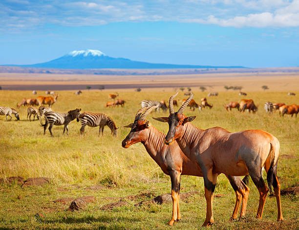
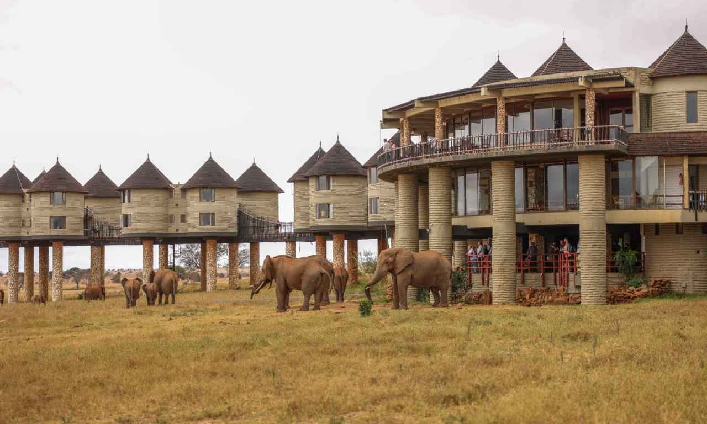
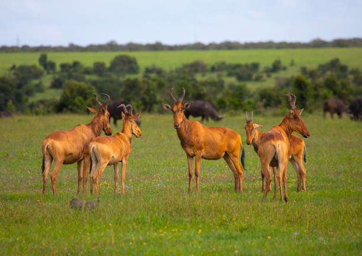
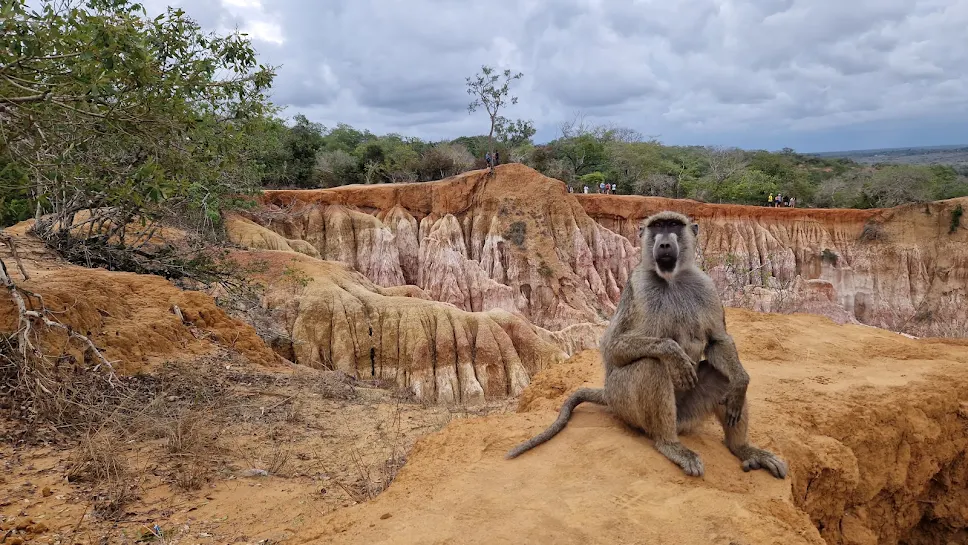

2-Day Salt Lick Safari
Enjoy a short safari escape to the Taita Hills region, featuring a distinctive lodge experience and opportunities to appreciate the surrounding wildlife and landscapes.

Discover the Salt Lick Safari Experience
Take a break from the city and explore the Taita Hills region on a two-day safari concept. This trip combines a scenic journey with time to enjoy the lodge experience and surrounding natural environment.
It is an option for travellers looking for a shorter wildlife getaway without committing to a longer safari.
The final accommodation, transport arrangements, activities and departure schedule can be discussed when requesting your quotation.
PLAN YOUR JOURNEYSuggested 2-Day Itinerary
A sample programme for a short visit to the Taita Hills area.
Journey to the Salt Lick Area
Depart Nairobi and travel towards Taita Taveta County. Arrive at your selected lodge, check in and take time to enjoy the surroundings. Depending on the confirmed schedule, enjoy an afternoon wildlife-viewing experience.
Morning Experience and Return
Enjoy breakfast and, subject to your lodge arrangements, an opportunity for a final wildlife-viewing experience. Check out and begin the return journey to Nairobi.
What Makes This Safari Special
A short getaway built around a distinctive lodge stay and the natural setting of southern Kenya.

Distinctive Lodge Stay
Enjoy a memorable accommodation experience in the Taita Hills area. The specific lodge and room arrangements are confirmed when booking.

Wildlife Viewing
Take time to appreciate the area's wildlife and natural surroundings, subject to the activities included in your confirmed programme.

Scenic Escape
Enjoy a change of scenery as you travel from Nairobi into the landscapes of Taita Taveta County.
Ready for a Short Safari Escape?
Contact Liamber Prime Travels Limited to confirm your preferred dates, lodge arrangements, group size and a personalised quotation.
REQUEST A SAFARI QUOTATION